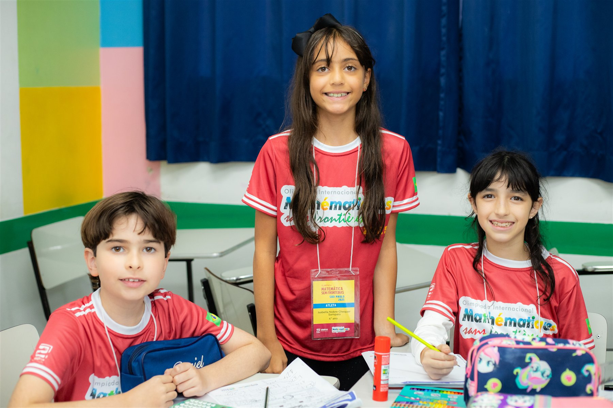

Nossa comunidadeEducação · Protagonismo · ComunidadeHistórias que começam com a voz dos nossos alunos.Ler reportagem →
Capa desta edição
Um jornal feito para dar voz às histórias dos nossos alunos
Este será o espaço para compartilhar descobertas, projetos, conquistas e os momentos que fazem parte da vida na Amplexo.
“Abrace e seja abraçado pela Educação.”